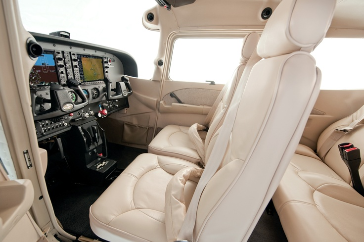
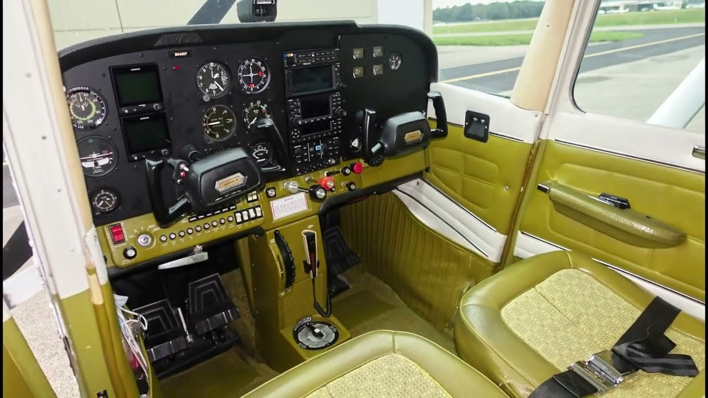

Cessna 172
Price: US$320,000
Model Year: 2021
Category: Small Plane
The Cessna 172 is one of the most trusted light aircraft in aviation. It is ideal for training, personal flying, and short-distance travel because of its reliability, stability, and easy handling.


